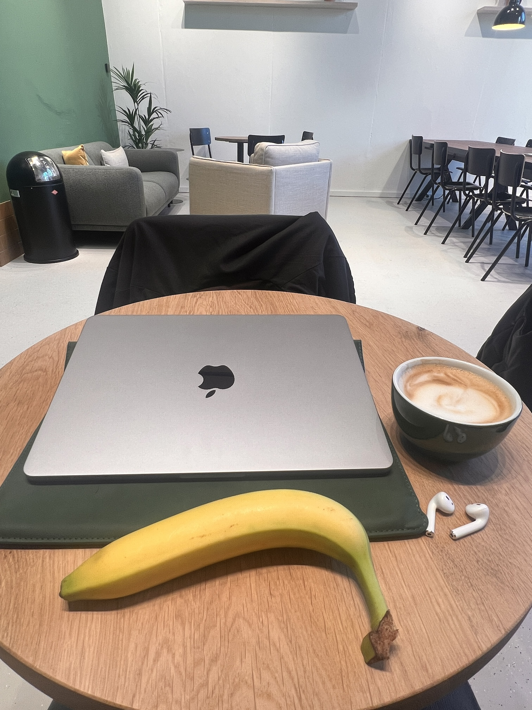
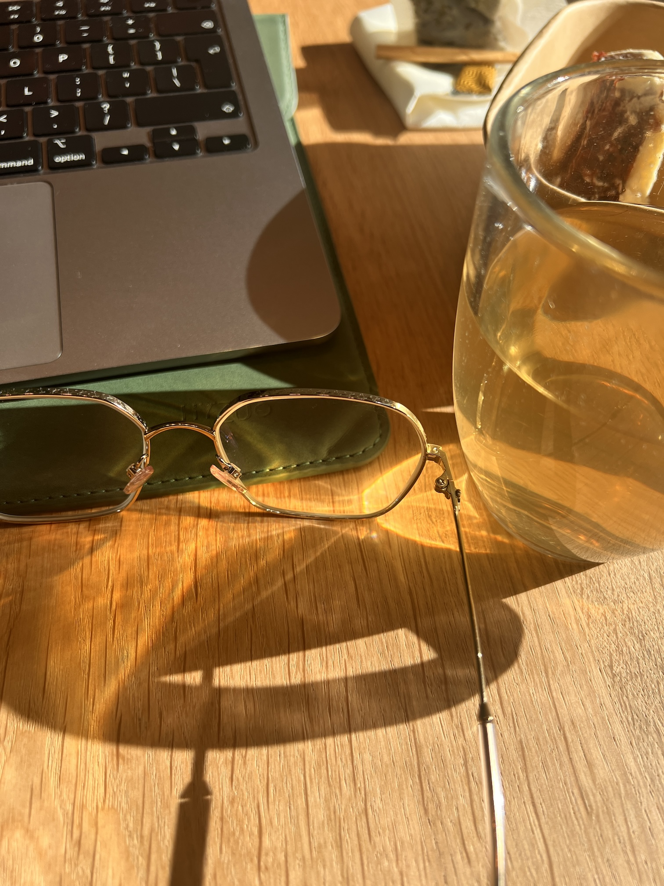
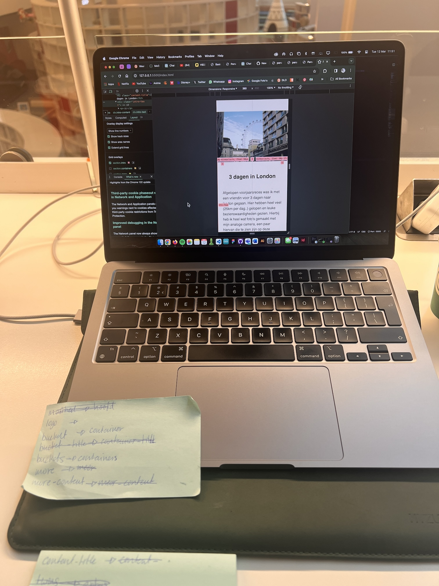
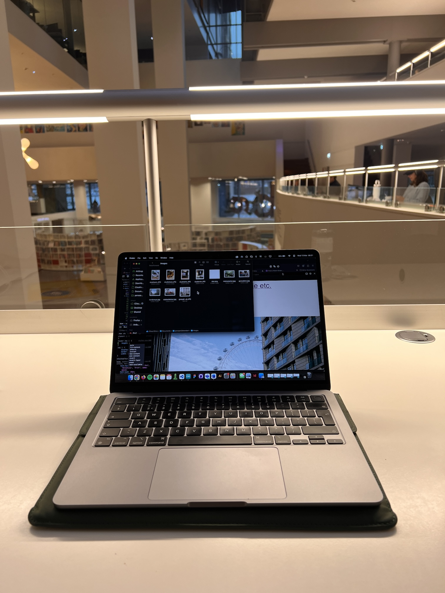
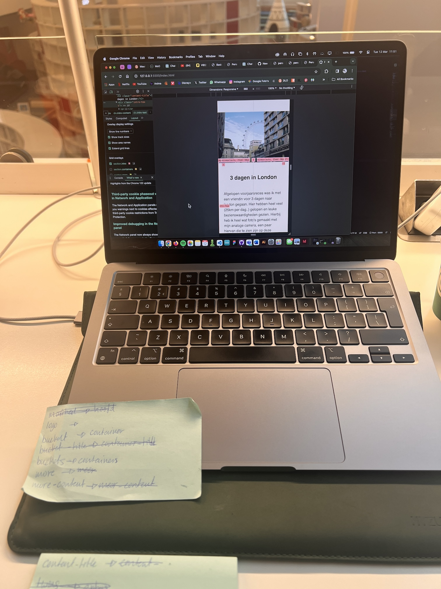
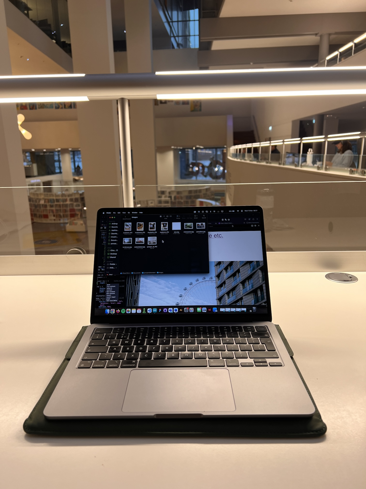
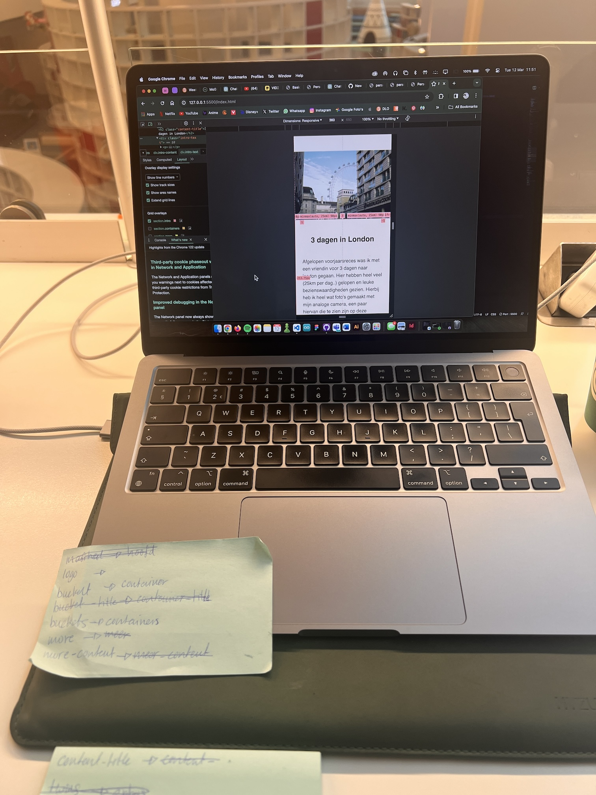
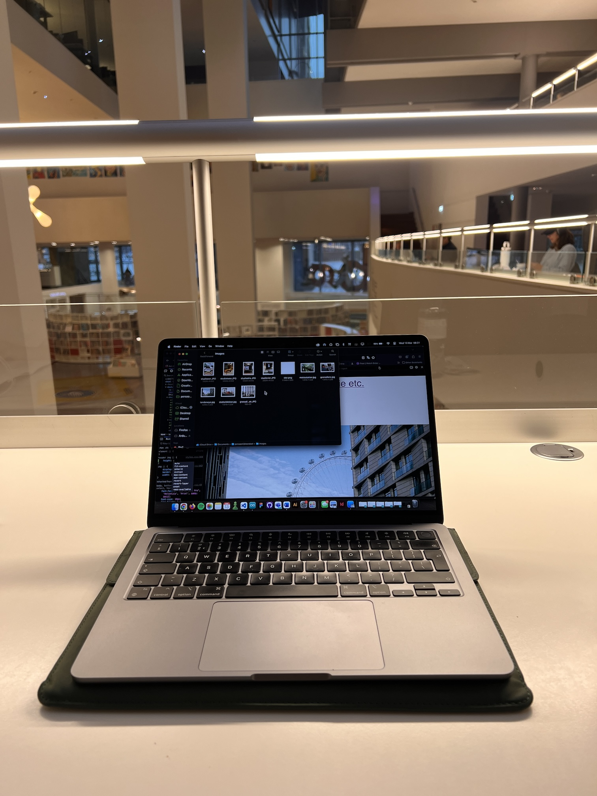

Studeren..


 





In totaal heb ik ongeveer 29 uur besteed aan mijn persoonlijk leerdoel. Ik had hier oorsprongelijk een planning gemaakt, maar natuurlijk was ik daarvan afgeweken… Uit eindelijk is het toch gelukt en heb ik veel nieuwe kennis opgedaan.
Ik heb verschillende onderdelen van CSS Grid geleerd zoals grid-template-columns’, ‘grid-template-rows’, ‘grid-gap’, en ‘grid-template-areas’ voor complexe lay-outs. Ook hoe ik gebruik maak van media queries